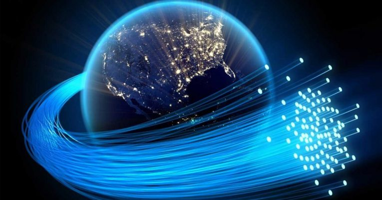
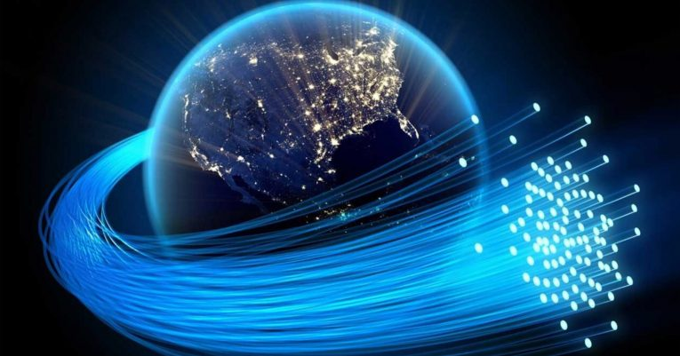

Introducción
¿Qué es un canal de comunicación?
Es el medio físico por el que que se lleva a cabo el intercambio de información entre un emisor y uno o varios receptores. Este medio de comunicación puede ser un par de alambres, un cable coaxial o hasta el aire mismo. Pero sin importar el tipo, todos los medios de transmisión se caracterizan por la atenuación, el ruido, la interferencia, el desvanecimiento y otros elementos que impiden que la señal se propague libremente por el medio; son factores que hay que contrarrestar al momento de transmitir cualquier información al canal.
¿Qué es la información?
La información es un patrón físico al cual se le ha asignado un significado comúnmente acordado. El patrón debe ser único, separado y distinto, capaz de ser enviado por un transmisor y de ser detectado y entendido por un receptor. Así, la información es transmitida a través de señales eléctricas u ópticas utilizando un canal de comunicación o medio de transmisión.
 
